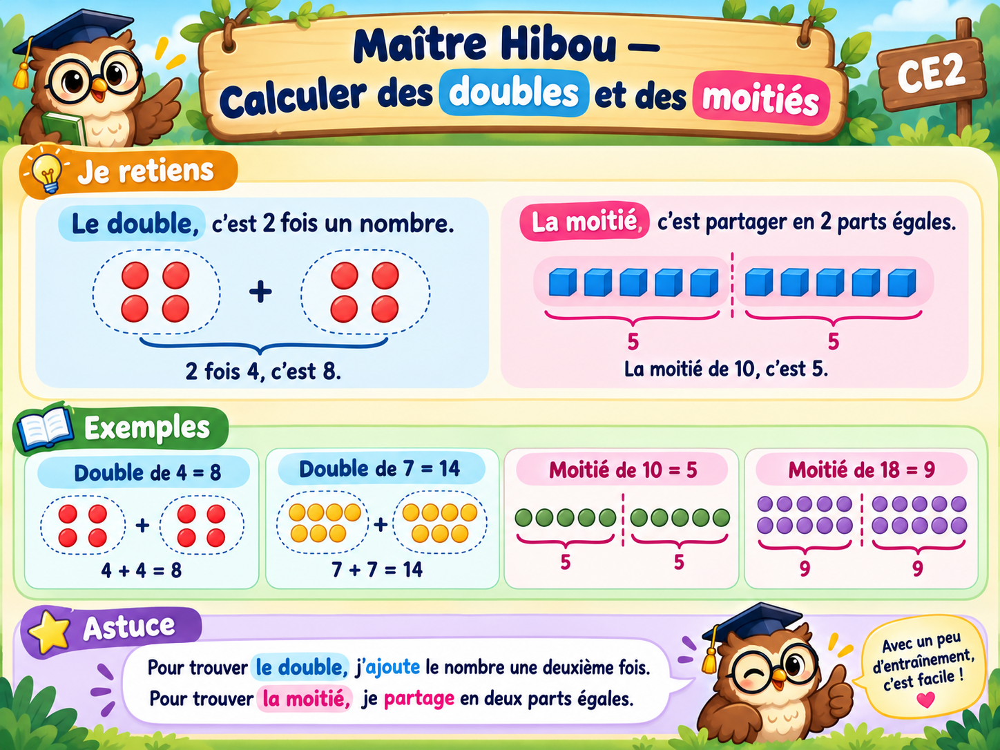

À toi de jouer !
Écris ta réponse, puis vérifie. Tu passes à la suite quand tu as trouvé.
Bravo ! Tu as terminé les six exercices.
Tu sais calculer des doubles et trouver des moitiés.

Écris ta réponse, puis vérifie. Tu passes à la suite quand tu as trouvé.
Tu sais calculer des doubles et trouver des moitiés.